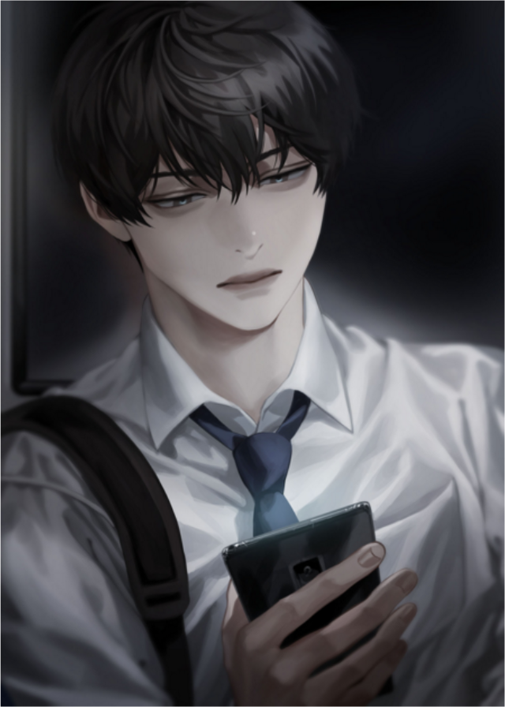

Description
Omniscient Reader's Viewpoint

- An apocalyptic fantasy fiction webnovel, written by a Korean author duo writing under the pen name Sing Shong.
- A novel called Three Ways to Survive in a Ruined World, has been written and published over the course of a decade, and Kim Dokja is the sole reader who has followed it to its ending.
- When the real world is plunged into the premise of Ways of Survival, Kim Dokja's unique knowledge of the novel becomes vital to his survival.
- Kim Dokja allies with Yoo Joonghyuk, the protagonist of Ways of Survival, in order to change the novel's original plot and more quickly approach the end of the story.